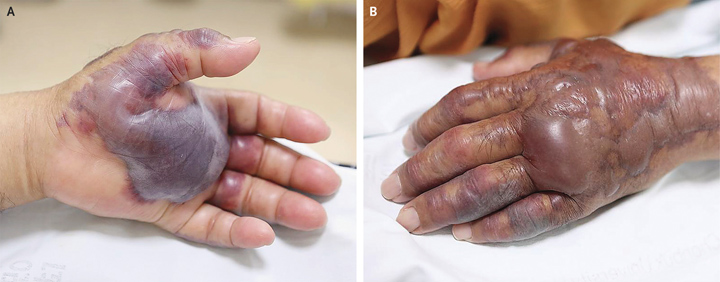

В июльском номере журнала The New England Journal of Medicine опубликовано описание случая инфекции, вызванной Vibrio vulnificus.
В июльском номере журнала The New England Journal of Medicine опубликовано описание случая инфекции, вызванной Vibrio vulnificus.
71-летний мужчина из Южной Кореи поступил в отделение неотложной помощи с жалобами на лихорадку и боль распирающего характера в левой руке, которые беспокоят его в течение 2 суток. Вышеуказанные симптомы возникли спустя 12 ч после употребления в пищу сырых морепродуктов (суши). Пациент страдает сахарным диабетом 2 типа, артериальной гипертензией и почечной недостаточностью, по поводу которой получает гемодиализ.
При поступлении на левой ладони имелась геморрагическая булла размером 3,5×4,5 см (рис. А) и эритематозный отёк со сливными напряженными буллами и экхимозами на тыльной поверхности левой кисти и предплечье (рис. В). В клинике было выполнено экстренное хирургическое вмешательство, и при бактериологическом исследовании отделяемого из буллы был выделен Vibrio vulnificus. После операции пациент получал цефтазидим и ципрофлоксацин внутривенно. Несмотря на проводимое лечение кожные поражения прогрессировали, развились глубокие некротические язвы, в связи с чем спустя 25 дней после начала заболевания хирургам пришлось провести ампутацию левой руки по предплечье. После ампутации состояние пациента было удовлетворительным, и он был выписан домой.

Park J, Lee CS.
Vibrio vulnificus Infection.
N Engl J Med. 2018 Jul 26; 379(4): 375.
Vibrio vulnificus — летние бактерии, «пожирающие плоть». V. vulnificus — бактериальный патоген семейства Vibrionaceae, которому для размножения требуется соль и тепло, поэтому обычно он обитает в теплой (>20°C) морской воде. Оптимальное содержание соли в морской воде для размножения V. vulnificus — 5-25‰. Заражение происходит путём попадания возбудителя из морской воды в открытую рану или при употреблении недостаточно термически обработанных морепродуктов (устриц, креветок, крабов). От человека к человеку V. vulnificus не передаётся.
V. vulnificus может вызвать некротический фасциит (летальность 15-20%), острый гастроэнтерит, септический шок (летальность — 50%).
Группу риска инфицирования составляют путешественники и туристы, которые не привыкли к определённым нюансам приморской жизни; пациенты с сопутствующими заболеваниями (сахарный диабет, хроническая патология печени, онкопатология, ВИЧ-инфекция, другие иммунокомпрометированные состояния). Распространённость V. vulnificus — повсеместно (США, Куба, Индия, Бразилия, Таиланд, Китай, Япония, Франция, Испания, Австралия). Более 95% случаев возникает в субтропических регионах северного полушария. В США зарегистрировано более 900 случаев за период с 1998 г. по 2006 г. (свыше 100 случаев в год, 85 госпитализаций, 35 летальных исходов).